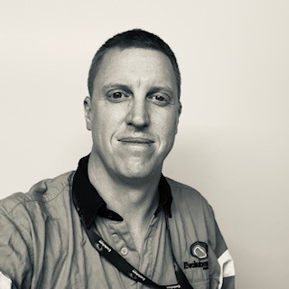

RMIT Student Number: S3923312.
Email: S3923312@student.rmit.edu.au
My name is Mark, I’m from Western Australia, currently living in New South Wales with my wife and daughter. I have a British heritage and English is my spoken language. I have previously served in the Australian defence force as an infantry soldier and have spent 10 years as a Surveying Technician in the mining industry with other roles in between including new and used vehicle sales, portable fire systems technician, warehousing and security. I love playing soccer and am a social Manchester United supporter.
I became interested in IT in high school, studying computer animation, technical drawing and computer studies subjects. My other interests were in the military and all things Army related which led me to my defence service. I have always loved playing video games with friends and have been interested in the technology behind it since the 90’s with the early game consoles. I have built my own custom PC for gaming purposes and have strived to update it whenever practical. I have current user level experience troubleshooting network and information/software systems at my current and previous roles whenever breakdowns or issues arise but have held no other professional IT related positions.
I chose to study with RMIT because I wanted to study a broader range of IT related subjects and not restrict myself to one field of work in the long term. I considered the subjects on offer and the reputation RMIT has and decided it was the best option for me. I have worked in the mining industry for a considerable amount of time and wanted to gain qualifications to provide myself other work opportunities when moving within or away from the mining industry.
While studying at RMIT I expect to gain the knowledge and skills I need to get the employment I’m looking for, across a wide range of subjects which will allow me to be multi skilled across the spectrum of IT related jobs and best arm me for the workforce and future career. I am hoping to gain experience in cloud computing and networking and build a greater knowledge of programming to allow me not only to take on a new job and job industry but also to help me gain the necessary knowledge to complete other hobby type tasks or interest such as game development and home automation.
Software engineer – BAE Systems
An ideal job for me would be combining my previous military experience, RMIT qualifications and my interest in IT in a defence industry role. The job would be an ideal step into an industry that is fascinating to me and would bring about plenty of challenges and job ultimately the long-term job satisfaction I am looking for.
The role is a software engineer working within the AIR 5077 wedgetail program, which is an electronic warfare suite in conjunction with Boeing Defence Australia for defence aircraft. The position itself is involved with the design, QA QC and testing of software relating to the electronic warfare program.
The skills and knowledge I have towards this role are currently not substantial. I will need exposure and experience to programming and developing software using C#, C and C++. I have held defence security clearances in the past and this wouldn’t be an issue to acquire. I have worked with geological and geospatial databases throughout mining and confident that I have strong problem-solving skills. To obtain the skills needed I will continue with my IT Bachelor and undertake training or short courses utilizing C#, C and C++. I will need a stronger understanding of database development and experience with Microsoft visual studio.
I have a “Defender” (ISFJ-A) personality according to the 16Personalities personality test
I am a “visual” learner from the educationplanner.org learning styles test.
I had a score of 58 on the mindtools.com creativity test.
These results sit well with me and aren’t overly surprising as it makes a lot of sense reflecting on my work habits and relationships with others. I benefit from being social and active in groups rather than working privately on my own tasks.
When working in a team I can be relied upon to do my part in the work that is needed and am happy to help others with their tasks. I’m enjoy networking and creating smooth flowing groups to boost productivity. I shy away from self-promotion and am happy to see the group succeed over individual praise. When forming teams, I need to be aware of not avoiding conflict to the point of not having my opinion heard and to understand that other members can be left alone to achieve their set goals and to not take on the work of others
The results from these surveys, aside from potentially being a great insight into someone’s personality, are reliant on the user answering questions in a manner they deem to be honest/close to the truth or how someone wishes to be seen or perceived. Results can vary each time they are taken, and the questions can be answered in such a way as to sway the result in a favorable outcome. I believe my results are reasonably close to representing my personality but still effected by a pre-determined outcome or categorization that may not represent myself completely.
Drone Photogrammetry Capture App:
The photogrammetry capture app I envisage is a program to enable an Unmanned Aerial Vehicle (UAV) operator to pre-plan custom and dynamic flight paths and select from a variety of functions and capture options to use during flight. It would include the software to plan a flight mission, enable the use of high accuracy GPS, initiate a flight to its planned parameters, carry out the planned functions of the aircraft during flight and return to its launch position without the need for input or intervention from the operator.
There are many programs for processing photogrammetry data, but the software used to control these flights can be lacking in functionality for certain situations for different industries. Options for planned flights include somewhat flexible methods but lack the combination of continuous data capture and customizable flight modes, narrowing the ability to use automated features and forcing users to manually achieve the result they are looking for because the software simply won’t allow it.
My current line of work has me involved in capturing GPS referenced photos with a drone to create 3d models of landscapes to be further processed using other software programs. The apps we currently use to control the capture of photos I believe are still in their infancy or designed to be used by a broad industry of drone users and not specifically for how we capture different types of data in an open cut mine. This app would improve on specific functionality to allow greater productivity and faster turnarounds in the field.
What would make this app different would be the functionality and control given to a user when capturing photographs and other data that are not restricted by a pre-planned grid pattern or captured directly 90 degrees under the drone. At my work I have improved the method for capturing geological face mapping data by producing 3d models of the face of the pit walls with the drone. Flying the drone manually I can point the camera horizontally at the face of a wall and store photos as I move the UAV sideways along an often curving or bending wall, sometimes varying in height and distance from the wall at random points. This type of flight is difficult to achieve with a linear pre planned flight utilizing the flight software and a better result can be achieved when flown manually.
The previous method of wall mapping involved geologists sketching different rock types and fault structures onto a piece of paper with the wal sectioned into 10m blocks to reference their drawing to whilst standing under the wall to observe the different details they could see. By using the drone to fly the face and capture millimeter accurate referenced photos, we were able to produce 3d models that were considerably higher in detail than the previous mapping techniques, remove the need for the geologists to be in the field for that task, therefore improving safety for those involved and allowing teams to access and interpret detailed models instead of sketches.
The teams were then able to take the 3d models and plot all the relevant details needed in the office out of the field. This type of data can be captured by laser scanners and other photogrammetry related systems, but RTK GPS enabled drones are not only cost effective but can be operated away from hazardous situations and landscapes and allow one operator to cover a large area in a short time frame with a high level of accuracy, and they look really cool while doing so.
The features that I would want to include involve setting a single line flight path for the drone to follow, allowing for continuous capture of photos based on either a time limit or distance travelled to allow for correct image overlap, with settings allowing for camera gimble pitch, angle and azimuth, a toggle for UAV speed and height based on the resolution required. This method alone can be used to capture vertical faces of objects and custom sized/shaped areas with user defined paths.
Having pre-planned flight paths and custom actions ie: Video capture, Continuous photo capture and expansion capabilities for external systems from thermal imagery to Lidar scanners, would enable users to have greater control over how they capture data in a more flexible and customizable way.
The software will need to support RTK GPS network functionality to allow the drone to receive satellite correction data, supplied from external hardware ie: base station, be compatible with existing drone manufacturers drones and their relevant safety systems, IE: vision systems, return to home functions and failsafe’s. The inclusion of a map service such as google maps to enable background satellite imagery for planning purposes and a storage system to allow users to save their previous flights for future use or reference. The app is also the operating center for the drone, providing details of battery usage and status, aircraft distance/height/direction and progress of mission.
The skills required to create such an app would include the programming of the software, design of the UI, the adaptation of the software to allow for different platforms including IOS, Android and Windows, the promotion of the app towards a target audience and the ongoing support and maintenance of the software. To find these skills and experience with Unmanned aerial vehicle control software could prove to be difficult, the industry leading manufacturer of consumer drones is based in China but there are a number of private aircraft manufacturers that could provide insight or assistance towards the software needed.
If this project were to be successful, it would fill the gap in functionality of current flight control applications for drones, it could assist many users in the mining, construction, agriculture and security industries by enabling more options in the ways this technology can be used, from automated filming flights to check farm fencing and water troughs, to drain inspections and asset protection without the need for a pilot to control the drone during flight. Drone technology is advancing and so too does the need for the ability to control this technology in a customizable and flexible manner.